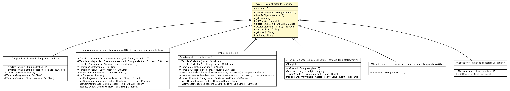

net.toxbank.isa
Class AnyISAObject<T extends com.hp.hpl.jena.rdf.model.Resource>

java.lang.Object
 net.toxbank.isa.AnyISAObject<T>
net.toxbank.isa.AnyISAObject<T>
- Direct Known Subclasses:
- ACollection, ANode, ARow, TemplateCollection, TemplateNode, TemplateRow
public class AnyISAObject<T extends com.hp.hpl.jena.rdf.model.Resource>
- extends Object
resource
protected T extends com.hp.hpl.jena.rdf.model.Resource resource
AnyISAObject
public AnyISAObject(String uri,
T resource)
AnyISAObject
public AnyISAObject(T resource)
getResource
public T getResource()
getModel
public com.hp.hpl.jena.ontology.OntModel getModel()
createTemplate
public com.hp.hpl.jena.ontology.OntClass createTemplate(String uri)
throws Exception
- Creates a subclass of the resource, if it is a class.
It could be considered a template to create new objects (individuals)
- Parameters:
uri -
- Returns:
-
- Throws:
Exception
createInstance
public com.hp.hpl.jena.ontology.Individual createInstance(String uri)
throws Exception
- Throws:
Exception
setLabel
public void setLabel(String label)
getLabel
public String getLabel()
toString
public String toString()
- Overrides:
toString in class Object
Copyright © 2012. All Rights Reserved.